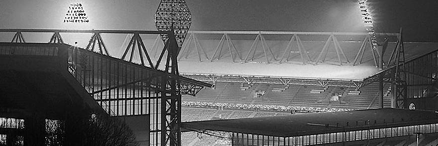

Today saw the opening of what is surely Germany’s most beautiful
football stadium with the occasion being marked with a friendly
match between BVB and Schalke 04 (0-3) to raise funds for the
impoverished BVB. Town mayor Guenter Samtlebe and BVB president
did the honours in front of a capacity 54,000 crowd. The stadium
has been built with the 1974 World Cup in mind. Following that it
will be home to the current regional league side Borussia
Dortmund. The stadium has cost 32 million marks to build with the
council having contributed just six million, the rest of the
funding coming from lottery, the FA and principally from the
regional government of North-Rhine Westphalia. The project has
attracted a lot of criticism with many raising doubts about the
whether such money could not be better spent elsewhere. Dortmund
has been given games between Scotland and Zaire, Bulgaria and
Holland, Holland versus Sweden as well as a semi-final (which
turned out to be Brazil v Holland).
The first goal in the new stadium was scored by a
young lady by the name of Margarethe Schaeferhoff at 18:18 in a
game between TBV Mengede and VfB Waltrop. Officially, by the way,
today’s opening game was unofficial because the German FA (DFB)
will officially open the stadium by staging an international
between Germany and Hungary there in two weeks’ time.